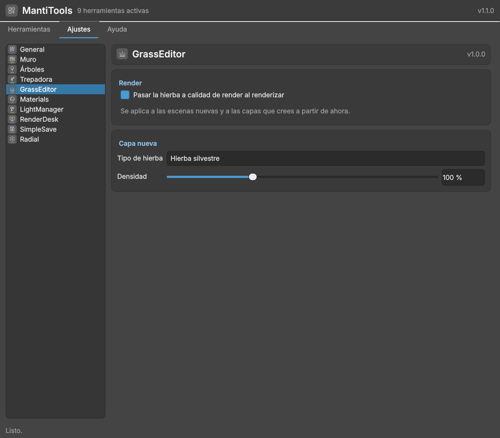

Para qué sirve
GrassEditor cubre el suelo de hierba sin que Maya se vuelva lento. Tú dices dónde crece (pintando, con curvas o con reglas de pendiente y altura) y qué tipos de hierba lleva. GrassEditor reparte las matas como instancias, enseña en el visor solo una parte y, al renderizar con Arnold, calcula únicamente la hierba que ve la cámara, con menos detalle a lo lejos.
Tu primera pradera en tres pasos
- Selecciona el suelo (o solo algunas caras).
- Clic derecho en el icono › Nueva capa. Sale hierba silvestre en todo el suelo.
- Clic en el icono para abrir GrassEditor y cambia la mezcla en la pestaña 2 · Hierba.
¿Quieres pintar dónde crece? Nueva capa con pincel: la capa empieza vacía y el pincel queda activo. Pinta en el visor sobre el suelo.
Consejo
Clic derecho en el icono › Jardín de ejemplo crea un jardín con una loma, un camino y un parterre, en tres capas. Es la forma más rápida de ver qué hace cada ajuste.
Las cuatro pestañas
| Pestaña | Para qué |
|---|---|
| 1 · Zonas | Dónde crece: pincel (Ctrl borra), todo el suelo o vacío, pendiente máxima, alturas, curvas (parterre, hueco, camino) y objetos de los que se aparta |
| 2 · Hierba | Qué crece: la mezcla de tipos y su parte, la densidad, la semilla y el editor de mata |
| 3 · Rendimiento | Cuánto pesa: visor ligero, cámara de render, recorte, detalle por distancia, aclarado, cifras y semáforo |
| 4 · Acabado | Material (Hierba simple o clay), convertir y exportar |
Los ocho tipos de hierba
Césped de jardín, hierba silvestre, hierba seca, trébol, espigas, juncos, flores silvestres (margaritas y amapolas) y mata ornamental, cada uno con su altura real. Se mezclan por porcentajes dentro de una capa. Cada tipo da seis variantes y tres niveles de detalle; el color va en los vértices, sin texturas.
Quiero…
| Quiero… | Cómo |
|---|---|
| Césped solo dentro de un parterre | Dibuja una curva cerrada, selecciónala y pulsa Parterre (solo dentro) |
| Un camino sin hierba | Dibuja una curva abierta, ponle Ancho y pulsa Camino |
| Que no crezca en las paredes de la loma | Baja la Pendiente máxima (30–40°) |
| Que no atraviese piedras ni troncos | Buscar Árboles y Cantera, o selecciona objetos y Añadir selección |
| Flores salpicadas en el prado | En 2 · Hierba, + Tipo › Flores silvestres al 10 % |
| Otro reparto con los mismos ajustes | Otra (semilla) |
| Mis propias matas | Ajusta el tipo en el Editor de mata y Guardar como nuevo… |
| Ver cómo saldrá en el render | Vista de render (puede ir lento) |
| Que la escena abra rápido | Hornear la capa |
| Deshacer | Ctrl+Z. Cada trazo del pincel es un paso |
El semáforo
Abajo de la ventana hay un punto de color con las cifras de toda la escena:
- Verde: la escena va sobrada.
- Ámbar: se renderiza, pero cada cuadro tarda.
- Rojo: demasiada hierba para el ordenador.
Clic derecho en el icono › Analizar rendimiento dice qué capa y qué tipo pesan más y qué hacer. Lo primero casi siempre es activar el recorte por cámara y el detalle por distancia en la pestaña Rendimiento, y elegir la cámara con la que vas a renderizar.
Si algo va mal
- No sale hierba: comprueba que la capa está Activa, que la zona no está vacía y que la pendiente máxima no es muy baja.
- El visor va lento: baja Mostrar al 5 % o pon Como: Cajas.
- En el render falta hierba en los bordes: sube el Margen del recorte.
En el estante
| Cómo | Orden |
|---|---|
| Clic en el icono | Abrir GrassEditor |
| Clic derecho | Nueva capa |
| Clic derecho | Nueva capa con pincel |
| Clic derecho | Jardín de ejemplo |
| Clic derecho | Analizar rendimiento |
Ajustes en MantiTools
Render
| Ajuste | Valores | Qué hace | Clave |
|---|---|---|---|
| Pasar la hierba a calidad de render al renderizar | Sí / no | Se aplica a las escenas nuevas y a las capas que crees a partir de ahora. | render_automatico |
Capa nueva
| Ajuste | Valores | Qué hace | Clave |
|---|---|---|---|
| Tipo de hierba | Césped de jardín, Hierba silvestre, Hierba seca, Trébol, Espigas, Juncos, Flores silvestres, Mata ornamental | tipo_inicial |
|
| Densidad | 10 a 300 % | densidad_inicial |